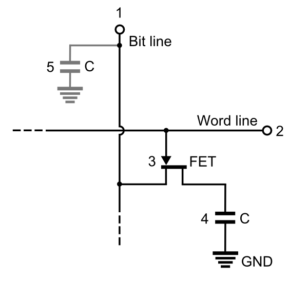

Semiversus | Dynamische Datenspeicher | URL: ../../dic/halbleiterelemente/dynamische_datenspeicher.html
- Digitale Systeme und Computersysteme
- Halbleiterelemente
- Dynamische Datenspeicher
Allgemeines
Speicher mit einer Speicherzelle, die die Information in kurzer Zeit verliert und daher im Betrieb aufgefrischt werden muss, nennt man dynamische Speicher. Dynamische Speicher sind daher auch immer flüchtige Speicher, den sobald die Betriebsspannung fehlt, kann die Information nicht mehr aktualisiert werden. Als Speicherelement dient fast ausschließlich ein Kondensator.
Aufbau
Bei der Realisierung von DRAM Speichern sind die Kondensatoren für die Speicherung im Bereich kleiner 50 Femtofarad. Die Bitleitung, die alle Speicherzellen einer Spalte verbindet hat durch ihre Ausdehnung eine Kapazität, die üblicherweise um den Faktor 5 größer ist.
3T1C Speicherzelle
 3T1C Speicherzelle (Bild: Chrihern CC BY-SA 3.0)
3T1C Speicherzelle (Bild: Chrihern CC BY-SA 3.0)
Um die Information, die im Kondensator gespeichert ist nun schreiben und lesen zu können wurden anfangs 3 Transistoren pro Kondensator verwendet (deswegen 3T1C). Mittels Q3 wird die Speicherzelle zum Schreiben ausgewählt. Nun kann Ladung von der Leitung Data In zum Kondensator fließen (Schreiben einer logischen 1), oder der Kondensator entladen werden (Schreiben einer logischen 0). Über Q2 kann die Information ausgelesen werden. Q1 dient als Verstärker, der den aktuellen Zustand verstärkt und damit die Kapazität der Leitung Data Out umladen kann.
Im Laufe der Zeit wurde diese 3T1C Zelle durch die 1T1C Zelle abgelöst, die wesentlich kleiner gebaut werden kann.
1T1C Speicherzelle
1T1C Speicherzelle (Bild: Tosaka CC BY 3.0)
Zum Schreiben wird die Datenleitung (Bit Line) auf den gewünschten Pegel gebracht und anschließend wird der Transistor durchgeschaltet. Dadurch wird die Kapazität entsprechend dem Pegel der Datenleitung geladen bzw. entladen.
Um die Information auszulesen wird die Datenleitung auf die Hälfte der Versorgungsspannung vorgeladen. Anschließend wird die Speicherzelle über den durchgeschaltenen Transistor mit der Datenleitung verbunden. Die Ladungen verteilen sich auf der Datenleitungs- und Speicherzellenkapazität. Wenn die Kapazität der Speicherzelle keine Ladungen gespeichert hatte, wird die Spannung leicht sinken. War die Kapazität voll geladen, wird die Spannung leicht steigen.
Da nach dem Durchschalten des Transistors die Information verloren geht wird direkt nach dem Auslesen die Information neu in die Speicherzelle geschrieben.